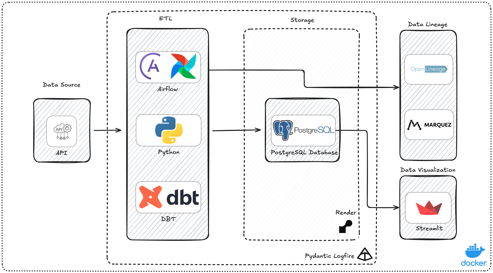
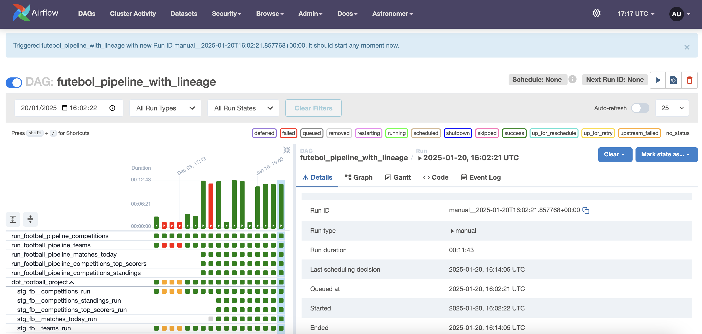
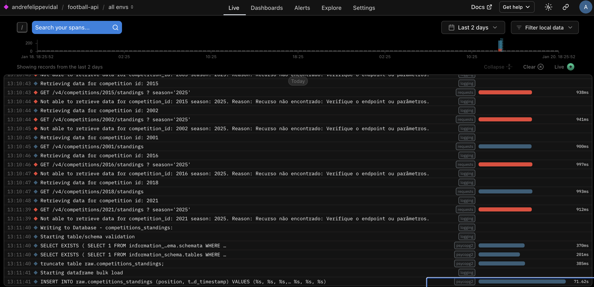

Football Pipeline Docs¶
Please note that this is as work in progress documentation.
FOOTBALL PROJECT¶
Project Description¶
This project serves as a portfolio to demonstrate data engineering skills, covering the complete data lifecycle: extraction, ingestion, transformation, orchestration, storage, visualization, and governance. It leverages modern technologies and industry best practices, including Docker, Airflow, Python with Poetry, PostgreSQL, dbt, Streamlit, MinIO (not yet), MkDocs, Logfire, and OpenLineage.
Note: Focused on prototyping various tools to understand their usage, not on building the best and fastest processes.
General Workflow¶
Overall Architecture¶

-
Data Source: https://www.football-data.org/
-
Data Ingestion:
Fetch data from a public football API and store it in a PostgreSQL database. API Extraction Code Docs -
Data Transformation:
Process the data using Python and dbt to organize the Data Warehouse layers (staging, intermediate, mart). -
Orchestration:
A sample file was added:
Use Airflow to manage the data pipeline. Airflow will invoke custom Docker images to process the data.
Note: We use the Astronomer version for simplicity; download it to streamline the process.
Note2: In the airflow settings file configured by Astronomer, include your API key and PostgreSQL settings in theairflow_settings.yamlfile:
sample_airflow_settings.ymlInfo: I've Changed Astro PostgreSQL port:astro config set postgres.port 5435There is also ansample.envthat needs to be configured with the token for logfire. -
Governance and Quality:
- Open Metadata as a data catalog and data governance tool, with the aditional data quality integrations. (Not ready)
-
For Data Quality apply data contracts with pydantic.
-
Visualization and Reporting:
Create interactive dashboards with Streamlit and export reports to MinIO. -
Documentation:
Use MkDocs with the Material for MkDocs theme to document the project, including technical details, architecture, and usage instructions. -
Observability:
Use Logfire as an observability tool to monitor the environment.
Technologies Used¶
- Orchestration: Apache Airflow
- Processing: Python (with Poetry, Pydantic)
- Transformation: dbt (Data Build Tool)
- Database: PostgreSQL
- Visualization: Streamlit
- Report Storage: MinIO (S3 simulation)
- Containerization: Docker and Docker Compose
- Data Validation: TBD
- Data Lineage: OpenLineage integrated with Airflow
- Documentation: MkDocs (Material for MkDocs)
- Observability: Logfire
How to Run¶
Pre-requisites¶
- Docker
- Python
3.12.15 - Poetry
- Astro CLI
- Postgres Database - I choose to create one using Render for Free that would be easier to connect and to handle.
- Logfire Account
Running Steps (Mac Os)¶
Note: before anything else, update all .env files.
a. on root folder ./
b. on airflow folder docker/airflow/ (.env and airflow_settings.yaml)
Starting the Environment¶
Open terminal on the root folder of the project and type:
1. poetry shell && poetry install - To open the poetry virtual env and install all library dependencies
2. task build_docker_images - To generate the python code images
3. task start airflow - To start airflow
a. task restart_airflow - To restart airflow if needed
b. task stop_airflow - To stop airflow if needed
4. task run_marquez - This can be run in a different terminal window because it will keep running. It will start the marquez server to track the lineage for DataOps reasons.
Once the entire environment is up you can access using the browser: 1. Airflow: Airflow UI - Monitoring and running the orchestration 2. Marquez: Marquez UI - Monitoring the data lineage 3. Logfire: Logfire UI - Monitoring the pipeline healthy
Starting the process:
1. In airflow UI you need to turn the dag into active mode and this will automatically trigger the entire end-to-end process. DAG: football_pipeline_with_lineage
Once it end successfully, you can use streamlit to visualize the data.
On Terminal, root folder:
1. task run_streamlit - To generate the server
2. Navigate to Streamlit UI
Useful Info¶
- To export the .env variables to your local poetry env and do local testing - On terminal: This is useful for DBT checks.
- To check project python code documentation locally: First on terminal: then MkDocs UI
Directory Structure¶
project/
├── docker/ # Dockerfiles for different components
│ ├── airflow/ # Airflow Configs
│ │ ├── dags/ # Airflow DAGs
│ │ ├── dbt/ # DBT folder
| │ │ ├── dbt_football/ # DBT configs and models
│ ├── streamlit/ # Dockerfile do streamlit
│ ├── python/ # Python code Dockerfile
│ ├── marquez/ # Marquez Dockerfiles
├── docs/ # Documentation Files (MkDocs)
├── images/ # README Images
├── src/ # Python Source Code
│ ├── contracts/ # Data Contracts
│ ├── utils/ # Python utilities and libraries
│ ├── visualization/ # Streamlit Code
│ ├── main.py # Python main code
├── tests/ # Automated tests (pytest)
├── .env # Environment Variables
├── pytest.ini # Minor Pytest configurations
├── mkdocs.yml # MKdocs Config
├── README.md # Readme File
├── poetry.lock # Poetry lock
└── pyproject.toml # Poetry Config
Workflow Images:¶
Orchestrator

Data Quality - Open AI


Data Visualization Streamlit


Data Ops - Open Lineage

Observability

Known Issues:¶
- There are issues with group stage competitions that needs further investigation.
- See all upcoming matches for Real Madrid: -- API blocked the access at this endpoint. To be further investigated. https://api.football-data.org/v4/teams/86/matches?status=SCHEDULED
Next Steps¶
~~0. Refactor README and document python code with docstrings and mkdocs.~~
- Implement data catalog with Open Metadata: a. Lineage can be added there and marquez can be removed. b. Some Data Quality can be implemented in a centralized place with Open Metadata.
- Integrate airflow with Minio to export reports to an like S3 bucket.
- Fix known issues with the cup competitions that have group stages and affect the process and the visualization. Known Issue #1
- Investigate known issue #2.
- Add more gen AI features a. Create tab In Streamlit App with OpenAI to answer questions regarding the data.